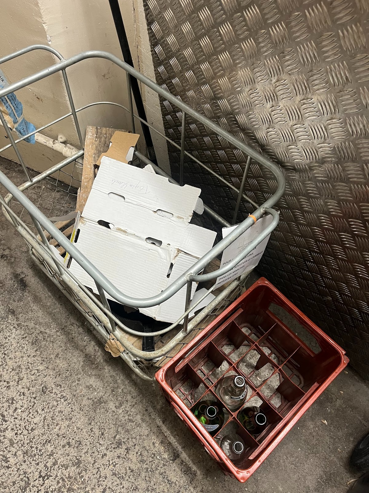
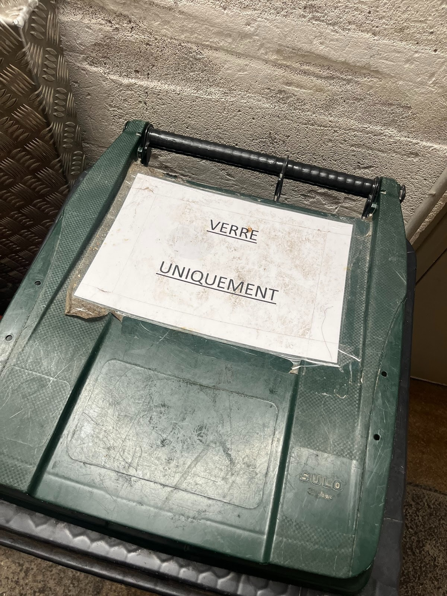
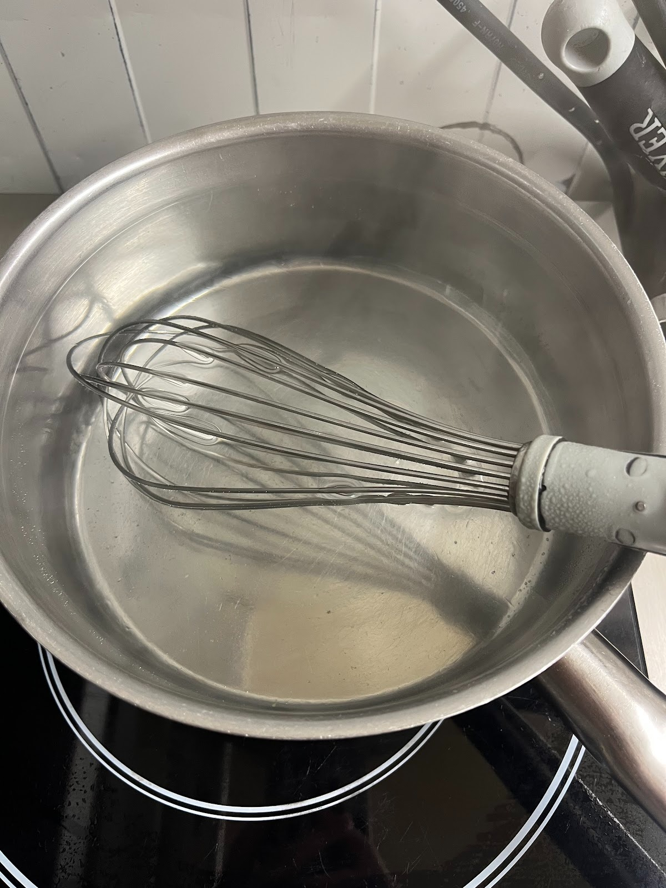
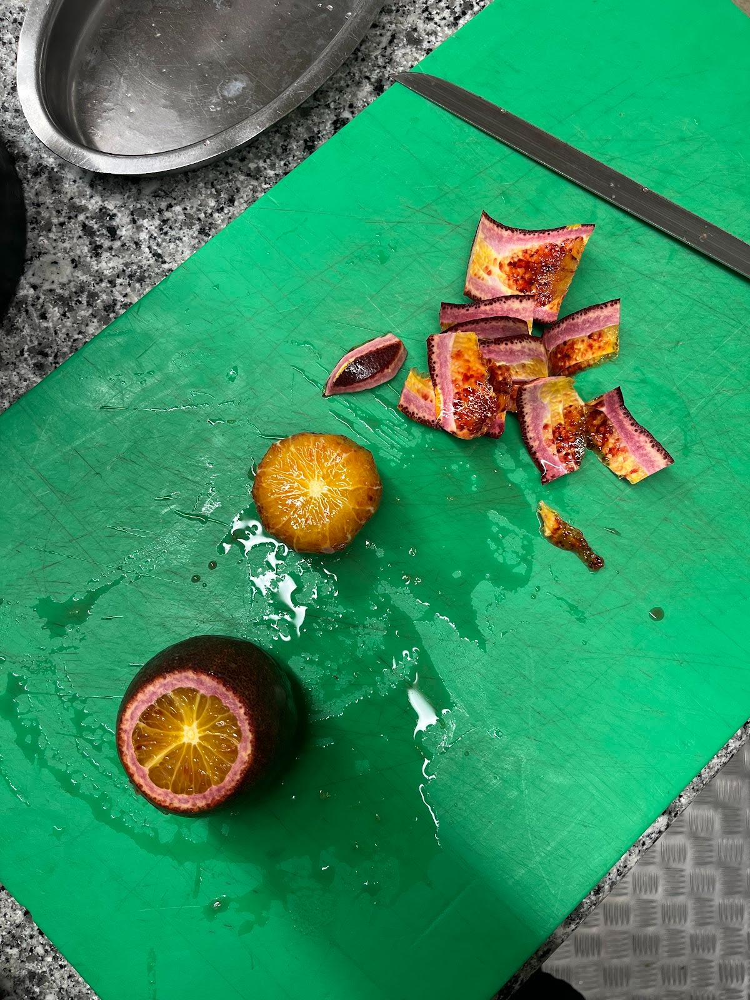
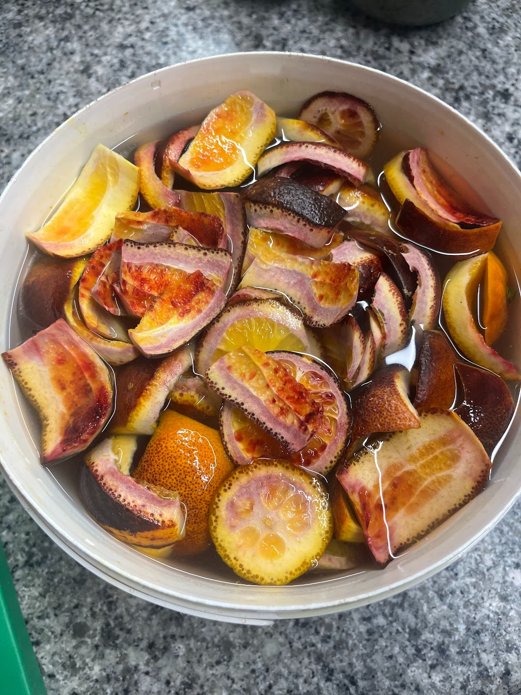
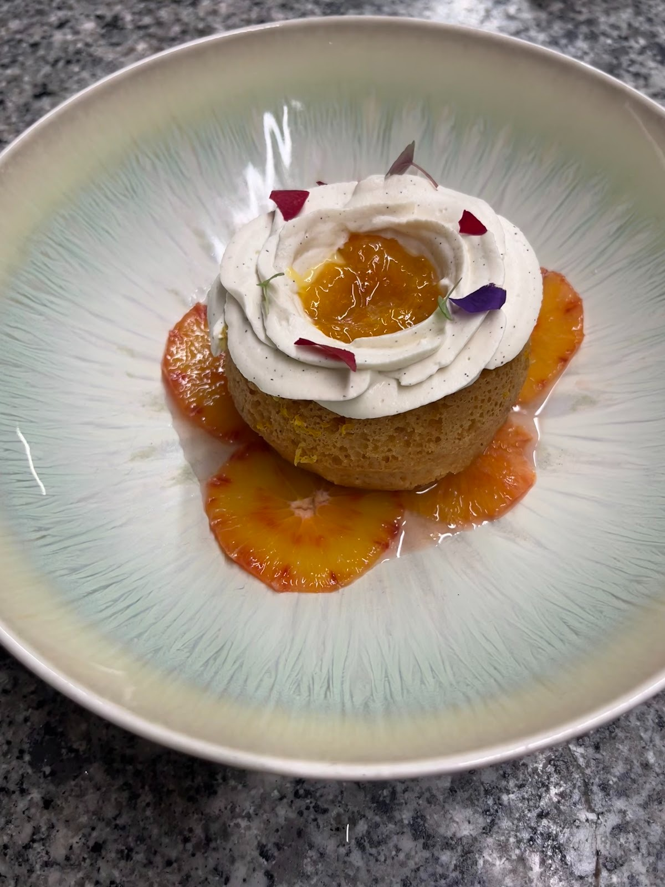

Page 7
Mettre en œuvre la gestion durable
des ressources
La gestion des déchets s'effectue avec trois poubelles différentes, ainsi que le recyclage des épluchures d'agrumes pour la réalisation d'un baba aux agrumes.
Tri sélectif — 3 poubelles
Poubelle 1
Cartons & consignes
La poubelle des cartons et consignes des bouteilles en verres.

Zone cartons & consignes
Poubelle 2
Verre uniquement
La poubelle du verre — collecte spécifique pour le recyclage du verre.

Verre uniquement
Poubelle 3
Collecteur à pédale 100 L
Collecteur à pédale avec couvercle — pour les déchets alimentaires et ordures ménagères.

Collecteur à pédale 100 L
Recyclage — Épluchures d'orange pour le Baba aux agrumes
1
Faire un sirop (eau + sucre).
2
Faire bouillir.
3
Peler les oranges.
4
Verser le sirop sur les épluchures et laisser infuser.
Dessert du Retour du Marché
Baba aux agrumes
Les épluchures d'orange, habituellement destinées aux déchets, sont recyclées pour confectionner le sirop d'imbibage du baba aux agrumes — dessert du menu Retour du Marché.
Étape 1–2

Sirop eau + sucre
Étape 3

Épluchage orange sanguine
Étape 4

Infusion épluchures dans le sirop
Résultat

Baba aux agrumes — dressage final